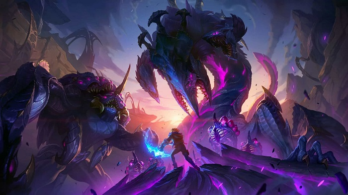

League of Legends (abreviado como LoL e comumente referido como League) é um jogo eletrônico do gênero multiplayer online battle arena (MOBA) desenvolvido e publicado pela Riot Games. Foi lançado em outubro de 2009 para Microsoft Windows e em março de 2013 para macOS. Inspirado em Defense of the Ancients (DotA), uma modificação de Warcraft III, os fundadores da Riot buscaram desenvolver um jogo autônomo do mesmo gênero. Desde o seu lançamento, o título é gratuito para jogar e monetizado por meio de personalização de personagens, a qual é obtenível através de uma moeda virtual comprável com dinheiro real.

Qual o objetivo principal
O principal objetivo no League of Legends é destruir o Nexus inimigo, uma estrutura localizada no centro da base adversária. Para chegar até ele, os jogadores precisam trabalhar em equipe, derrotar inimigos, conquistar torres e controlar o mapa. Vencer exige estratégia, habilidade e cooperação.
Além de destruir o Nexus, os jogadores devem cumprir objetivos secundários que ajudam a conquistar a vitória. Entre eles estã
Destruir torres: Abrem caminho até a base inimiga.
Eliminar inibidores: Fazem nascer super tropas que ajudam no avanço.
Controlar dragões e o Barão: Criaturas épicas que dão bônus importantes.
Fazer abates e assistências: Enfraquecem o time inimigo e dão vantagem de ouro e experiência.
Controlar o mapa: Usar sentinelas para visão e dominar áreas estratégicas.
Esses objetivos aumentam o poder do time e facilitam a destruição do Nexus.
Campeões
O que são campeões em League of Legends?
Campeões são os personagens jogáveis em League of Legends. Cada um tem habilidades únicas, estilos de jogo diferentes e funções específicas no time, como ataque, defesa ou suporte. Escolher bem o campeão é essencial para ajudar o time a vencer.
Como funcionam os campeões e como escolher o ideal para jogar?
No League of Legends, os campeões são os personagens jogáveis, cada um com habilidades únicas, estilos de jogo diferentes e funções específicas dentro da equipe. Existem campeões mais focados em causar dano, outros em proteger aliados, controlar o campo de batalha ou resistir mais aos ataques inimigos.
Para escolher o campeão ideal, é importante considerar seu estilo de jogo. Gosta de jogar com agilidade e causar muito dano? Campeões assassinos ou atiradores podem ser a melhor opção. Prefere proteger seus aliados ou resistir bastante nas lutas? Tanques e suportes são ideais. Também vale testar diferentes funções até encontrar aquela com a qual você se sinta mais confortável.
O segredo é experimentar, aprender com cada partida e, aos poucos, descobrir os campeões que combinam com você.
Aqui um site que recomendamos para as melhores builds para cada campeão
O que torna League of Legends um jogo tão popular no mundo todo?
League of Legends é um dos jogos mais populares do mundo porque combina estratégia, habilidade individual e trabalho em equipe.
Além disso, ele recebe atualizações frequentes, eventos temáticos, novos campeões e modos de jogo, o que mantém a comunidade engajada. Outro ponto forte é o cenário competitivo (esports), que atrai milhões de espectadores em campeonatos como o Mundial de LoL (Worlds).
Cada campeão em LoL possui quatro habilidades únicas, uma passiva e um estilo de jogo específico. Eles se dividem em funções como:
assassinos
tanques
magos
Lutadores
atiradores
suportes
Para escolher o ideal, o jogador pode considerar:
Seu estilo de jogo (mais agressivo, defensivo ou estratégico);
A função que prefere na equipe;
A curva de dificuldade do campeão;
Se ele é forte no meta atual (dependendo do patch).
Sites como u.gg e op.gg ajudam a ver estatísticas e guias atualizados para cada campeão.
O que são objetivos secundários e por que eles são tão importantes?
Além de destruir o Nexus, o jogo oferece vários objetivos secundários que fazem diferença na partida:
Torres: Abrem caminho para o Nexus e dão ouro para o time;
Arauto do Vale: Ajuda a derrubar torres no início do jogo;
Barão Na’Shor: Fortalece as tropas aliadas para pressionar o inimigo;
Inibidores: Ao serem destruídos, criam superminions que ajudam muito nas lutas.
Controlar esses objetivos é essencial para ter vantagem estratégica, mesmo que o time esteja perdendo em abates
Como é o cenário competitivo de League of Legends?
O cenário competitivo de LoL é um dos maiores do mundo dos esports. As principais ligas regionais são:
LCK (Coreia).
LEC (Europa).
LPL (China).
CBLOL (Brasil), entre outras.
O grande destaque do ano é o Worlds, o campeonato mundial, que reúne os melhores times do planeta e atrai uma audiência de milhões.
Os pro-players são reconhecidos internacionalmente e muitos se tornam influenciadores ou streamers.